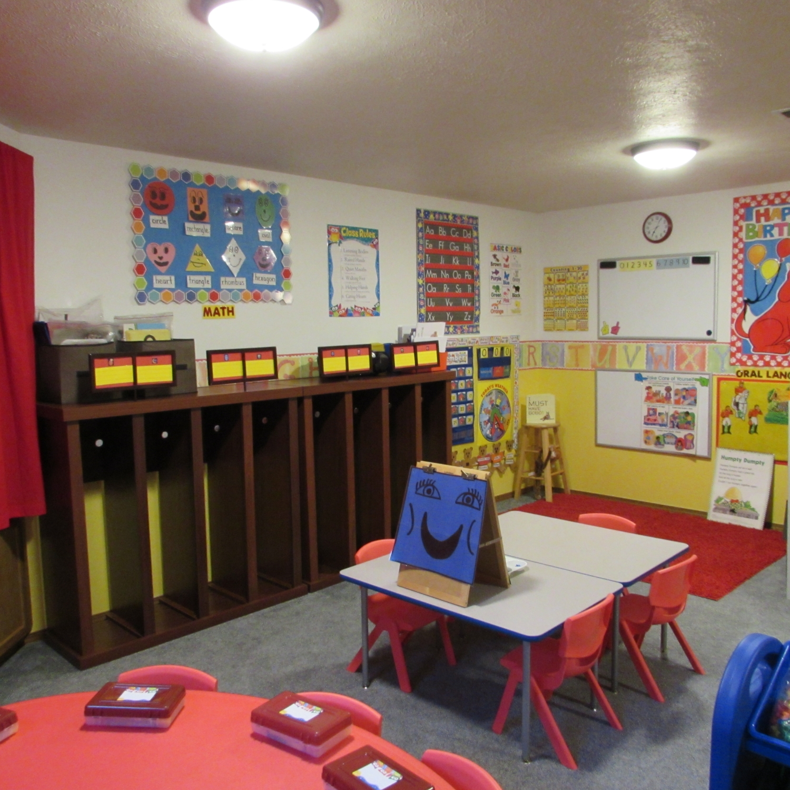
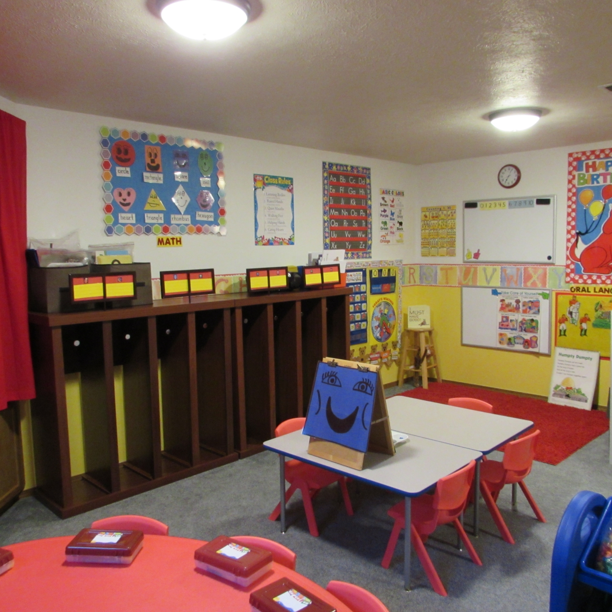

Shining Stars Preschool is licensed by the Department of Early Learners
Days and Times
4 years old by August 31st
Monday, Wednesday, Friday from 9:30 - 12:00 or
Monday, Wednesday, Friday from 12:30 - 3:00
3 years old by August 31st
Tuesday and Thursday from 9:30 - 12:00
Enrollment is available on a first come, first served basis
Teaching based on the Washington State Early Learning and Developmental Guidelines
 
